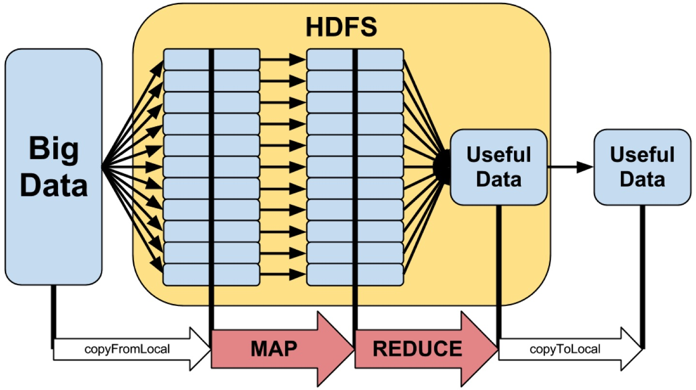
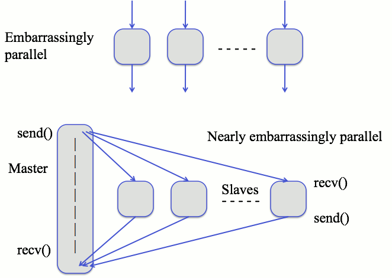

Technology

Jeremy Leipzig
Department of Information Science
College of Computing and Informatics
Drexel University
Some themes
Big data requires commensurate technology.
Big data technologies are specialized for different uses,
designed to support different processing needs.
Most speed-ups only handle the (embarrassingly) simple stuff.
When there's lots of data, it's best to leave it where it is.
Computers are getting bigger, cheaper, and more virtualized.
People aren't.
Hadoop and Spark are frameworks, and map-reduce is a pattern,
Vocabulary
Job
Batch
Stream
Cluster/Grid/Cloud
Node
Workflow/Pipeline
HPC
IO-Bound / CPU-Bound / Memory-Bound
Scalability
Computing essentials
Let's talk about processing, disk, memory, and networks.
Processors execute tasks and commands.
Disks hold "cold" storage, and must be read to be processed.
Memory holds "hot" storage, and is available very rapidly.
Networks transfer data between machines.
- Remember these details:
-
Processors get stuff done.
-
Disk space is abundant and secure, but slow to access.
-
Memory is limited and ephemeral, but quick to access.
-
Sending data across a network is usually slow.
How is big data handled?
It can help to break things into pieces.
This is called parallelization,
and often requires specialized technology.
Not every process can be completely parallelized,
but many algorithms are "embarrassingly parallel."
- Two common types of parallelism:
-
Split tasks on one computer across multiple cores (limited).
-
Divide tasks on clusters across multiple machines (scalable).
Serving data on a cluster
Big data often doesn't fit on a single disk.
So clusters more than often have a "distributed file system,"
which is a "storage node" that controls access to many disks
and makes them look like a single disk for "compute nodes"
that perform user-specified tasks.
Distributed file systems are network-accessed.
Block and object storage
Sharing data on a cluster
When a "job" is split across a cluster there's often a problem:
how can the individual nodes communicate?
- There are two extreme frameworks to this end:
-
Shared everything (SE): all data is available to all nodes
-
Shared nothing (SN): no data is communicated between nodes
MPI
Message Passing Interface (MPI) is all about info. sharing.
MPI allows nodes to share intermediate data during processing.
I.e., this is a network-enabled SE framework.
MPI is not tied to a distributed file system, so it's "portable."
However, distributed file systems are necessary for Volume.
Messages are passed between nodes,
making MPI heavy on network requirements.
When shared data gets very voluminous, this can be a problem.
Embarrassingly parallel algorithms

This refers to when it is very easy to parallelize an algorithm
and usually coincides with algorithms that can use SN,
like doing +1 to a list of 10 million numbers,
or when there is very little need for lateral communication.
Required reading: Wikipedia (through etymology)
Map-reduce
Most parallelism uses SN and the "map-reduce" pattern.
Embarrassingly parallel algorithms are ripe for map-reduce.
- So, how does map-reduce distribute computation:
-
A master node sends code and assigns data to workers
-
which operate independently on data-records (map)
-
whose output is sorted (the shuffle) by the master
-
and sent back to workers for any completion tasks (reduce).

Hadoop
Hadoop is software for distributed storage and processing.
Hadoop is engineered for processing big (Voluminous) data.
Importantly, it takes care of the nitty-gritty work in map-reduce.
Hadoop is written in Java, but Hadoop Streaming
allows for Map and Reduce to be written in other languages.
Really important: data is distributed across compute nodes,
i.e., computation lives on top of the source data.
- Some details:
-
The Hadoop distributed file system (HDFS) is paramount...
-
...so it's only practice-Hadoop without a dedicated server.
-
Intermediate data is always stored on disk between steps.
-
I.e., this framework is heavy on disk reads and writes.
Spark
Spark is the next generation framework after Hadoop.
Spark does not necessarily replace Hadoop,
or at least the Hadoop distributed file system.
Spark is written in Scala, but has nice Python and R abstractions.
Hadoop can be slow with intermediate disk reads/writes.
Sparks does a lot with intermediate data in memory.
Also, it's fault-tolerant, with resilient distributed datasets (RDDs)
- Some aspects:
-
Spark is geared toward data analysis as much as management.
-
RDDs are efficient, since faults don't mean "start over."
-
Also, keeping data in memory can make Spark much faster.
-
Since memory is limited, Spark will write to disk if necessary.
GPU processing
Most of the time we think about CPUs for processing.
There are also specialized, graphics processing units (GPUs),
which leverage the regular structure of image-data.
Recall—images are really matrices of pixels.
Matrices operations are often embarrassingly parallel.
So, GPUs have lots and lots of small cores inside.
E.g., the Nvidia Titan Z GPU has 5,760 cores at ~900Mhz, each!
These are also being used for general purpose processing,
but generally for the least-complex tasks.
Recap
Big data requires commensurate technology.
Big data technologies are specialized for different uses,
designed to support different processing needs.
Most speed-ups only handle the (embarrassingly) simple stuff.
When there's lots of data, it's best to leave it where it is.
Hadoop and Spark are frameworks, and map-reduce is a pattern,
- Next week: Acquiring data
-
determining sources of data
-
collecting data
-
data access